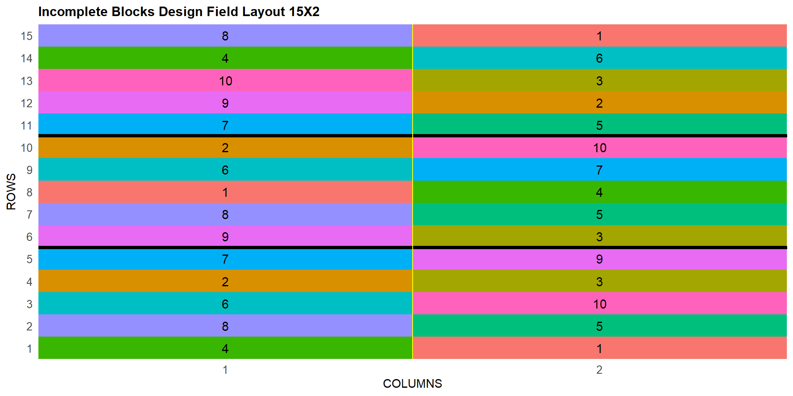

Aula 61. DBI, Delineamento em Blocos Incompletos
Quando o bloco completo não cabe em campo, croqui, modelo e comparação ajustada
Acompanhe o Café com R
Que cada gole desperte uma nova ideia.
Que cada script abra uma nova conversa.
Que o Café com R se torne um ponto de encontro nosso.
SITE OFICIAL > https://jenniferlopes.github.io/meu_site/
Objetivos da aula
- Entender quando um bloco completo não cabe fisicamente em campo
- Distinguir blocos incompletos balanceados de delineamentos alfa-látice
- Gerar o croqui de um Delineamento em Blocos Incompletos com
FielDHub - Conferir a estrutura real retornada pelo pacote antes de programar em cima dela
- Ajustar o modelo respeitando a estrutura de bloco dentro de repetição
- Comparar médias com o ajuste apropriado a essa estrutura
Bloco 1
O Delineamento
Conceito, quando blocos completos não cabem
Contexto: um programa de melhoramento genético avalia 10 novas linhagens quanto à produtividade. A área disponível permite blocos com apenas 5 parcelas cada, metade do número de linhagens.
Quando o número de tratamentos excede o tamanho prático de um bloco homogêneo em campo, o Delineamento em Blocos Incompletos, DBI, permite manter o controle local mesmo sem caber todos os tratamentos no mesmo bloco.
Cada bloco incompleto recebe apenas um subconjunto dos tratamentos, e o delineamento é construído de forma que, ao longo das repetições, todos os tratamentos sejam comparados de forma equilibrada.
Blocos incompletos balanceados x alfa-látice
| Estrutura | Característica |
|---|---|
| Blocos incompletos balanceados | Todo par de tratamentos aparece junto no mesmo bloco o mesmo número de vezes |
| Alfa-látice | Estrutura resolúvel mais flexível, não exige balanceamento perfeito entre todos os pares, prática para números grandes de tratamentos |
- Com 10 linhagens e blocos de tamanho 5, uma estrutura resolúvel do tipo alfa-látice é a solução prática mais comum, e é o tipo de delineamento que o
FielDHubgera pela funçãoincomplete_blocks().
Bloco 2
Gerando o Croqui
FielDHub para blocos incompletos
- Os parâmetros centrais são
t, o número de tratamentos,k, o tamanho de cada bloco incompleto, er, o número de repetições completas do experimento.
Important
Atenção: passar t como um número inteiro, em vez de um vetor de rótulos personalizados, deixa o FielDHub responsável por gerar seus próprios identificadores de tratamento. Isso evita divergência entre o rótulo que você imagina e o rótulo que a função realmente devolve.
Conferindo a estrutura antes de programar em cima dela
Output: a estrutura real do fieldBook
[1] "ID" "LOCATION" "PLOT" "REP" "IBLOCK" "UNIT"
[7] "ENTRY" "TREATMENT" ENTRY TREATMENT
1 1 G-1
2 2 G-2
3 3 G-3
4 4 G-4
5 5 G-5
6 6 G-6
7 7 G-7
8 8 G-8
9 9 G-9
10 10 G-10
- A coluna
ENTRYguarda o número inteiro do tratamento, de 1 a 10, o mesmo índice usado para gerar o delineamento. É essa coluna, numérica e estável, que usaremos para vincular a produtividade simulada a cada linhagem, em vez de comparar rótulos de texto que podem variar entre versões do pacote.
Bloco 3
Estrutura do Modelo
Modelo estatístico do DBI, bloco dentro de repetição
\[Y_{ijk} = \mu + \tau_i + \rho_j + \beta_{k(j)} + \epsilon_{ijk}\]
| Termo | Significado |
|---|---|
| \(\tau_i\) | Efeito da linhagem \(i\) |
| \(\rho_j\) | Efeito da repetição \(j\) |
| \(\beta_{k(j)}\) | Efeito do bloco incompleto \(k\), dentro da repetição \(j\) |
- A notação \(\beta_{k(j)}\) indica que o bloco está aninhado dentro da repetição, cada bloco pertence a exatamente uma repetição, e blocos de repetições diferentes não são comparáveis diretamente entre si.
Particularidade, nem todo tratamento aparece em todo bloco
Diferente do DBC, em que cada bloco contém todos os tratamentos, no DBI cada bloco contém apenas um subconjunto. A diferença entre duas linhagens específicas pode ser estimada com base em blocos diferentes, dependendo de quais pares de linhagens compartilharam o mesmo bloco.
Como consequência, nem todos os contrastes entre linhagens têm exatamente a mesma precisão, uma particularidade que a análise clássica intra-bloco captura apenas parcialmente, e que modelos mistos, tema da próxima aula, tratam de forma mais completa ao recuperar também a informação entre blocos.
Bloco 4
Simulando a Produtividade
Código: vínculo por índice numérico, não por rótulo de texto
efeito_linhagem <- round(rnorm(n_linhagens, mean = 0, sd = 18), 1)
medias_reais <- 200 + efeito_linhagem
# Vincula pela coluna ENTRY, numérica e estável, em vez de comparar texto
dados_dbi <- fieldBook |>
mutate(
REP = factor(REP),
IBLOCK = factor(IBLOCK),
bloco_id = factor(paste(REP, IBLOCK, sep = "_")),
entry_idx = as.integer(ENTRY),
produtividade = medias_reais[entry_idx] + rnorm(n(), 0, 12))
# Confirma que não sobrou nenhum valor não vinculado antes de seguir
stopifnot(!anyNA(dados_dbi$produtividade))Output: dados simulados prontos para análise
REP IBLOCK bloco_id ENTRY TREATMENT produtividade
1 1 1 1_1 4 G-4 201.6026
2 1 1 1_1 8 G-8 228.4871
3 1 1 1_1 6 G-6 213.6321
4 1 1 1_1 2 G-2 222.6768
5 1 1 1_1 7 G-7 199.6033
6 1 2 1_2 1 G-1 185.2321
7 1 2 1_2 5 G-5 207.4159
8 1 2 1_2 10 G-10 210.3209
9 1 2 1_2 3 G-3 209.6473
10 1 2 1_2 9 G-9 206.4014- O vínculo pela coluna
ENTRYgarante correspondência exata entre cada linha dofieldBooke a média simulada da linhagem correspondente, sem depender de rótulos de texto que podem divergir entre versões do pacote. Ostopifnot()interrompe a execução imediatamente, com uma causa clara, caso algo saia fora do esperado.
Bloco 5
Descritiva
Código: desc_stat()
Output e interpretação
# A tibble: 10 × 11
TREATMENT variable cv max mean median min sd.amo se ci.t n.valid
<chr> <chr> <dbl> <dbl> <dbl> <dbl> <dbl> <dbl> <dbl> <dbl> <dbl>
1 G-1 produtiv… 4.07 201. 192. 191. 185. 7.82 4.52 19.4 3
2 G-10 produtiv… 6.11 219. 208. 210. 194. 12.7 7.33 31.5 3
3 G-2 produtiv… 3.55 228. 221. 223. 212. 7.86 4.54 19.5 3
4 G-3 produtiv… 4.04 214. 207. 210. 198. 8.36 4.83 20.8 3
5 G-4 produtiv… 6.11 202. 194. 200. 180. 11.8 6.84 29.4 3
6 G-5 produtiv… 4.61 221. 210. 207. 202. 9.68 5.59 24.0 3
7 G-6 produtiv… 3.08 214. 207. 207. 201. 6.37 3.68 15.8 3
8 G-7 produtiv… 8.32 200. 188. 194. 170. 15.6 9.02 38.8 3
9 G-8 produtiv… 1.85 235. 230. 228. 226. 4.26 2.46 10.6 3
10 G-9 produtiv… 5.60 231. 218. 216. 206. 12.2 7.04 30.3 3- A produtividade média varia entre as 10 linhagens, com amplitude relevante entre a maior e a menor média observada, consistente com os efeitos de linhagem simulados.
Bloco 6
Análise
Código: ajuste do modelo à estrutura incompleta
Output
# A tibble: 4 × 6
fonte_variacao Df `Sum Sq` `Mean Sq` `F value` `Pr(>F)`
<chr> <dbl> <dbl> <dbl> <dbl> <dbl>
1 "REP " 2 56.9 28.4 0.272 0.766
2 "bloco_id " 3 1004. 335. 3.20 0.0538
3 "TREATMENT " 9 4227. 470. 4.49 0.0052
4 "Residuals " 15 1568. 105. NA NA Interpretação, graus de liberdade e eficiência
O fator
bloco_id, já combinando repetição e bloco incompleto num único identificador, expressa a mesma estrutura hierárquica deREP / IBLOCK, sem depender da reconstrução automática dos contrastes de interação que, no fieldBook real, pode falhar quando algumREPfica com um único nível deIBLOCKremanescente após qualquer filtragem.Essa análise é chamada intra-bloco, ela usa apenas a informação disponível dentro de cada bloco. Parte da informação entre blocos, potencialmente relevante, não é recuperada por essa abordagem clássica de efeitos fixos, o que motiva a análise por modelos mistos apresentada na próxima aula.
Bloco 7
Comparação de Médias Ajustada
Por que a comparação em blocos incompletos exige ajuste
Como nem todo par de linhagens compartilha o mesmo conjunto de blocos, a diferença entre duas médias precisa ser ajustada pela estrutura do delineamento, e não pode ser calculada como uma diferença simples de médias observadas, sob risco de ignorar o desenho experimental.
O
emmeans, aplicado sobre o modelo já ajustado com a estrutura correta de bloco dentro de repetição, calcula essas médias ajustadas automaticamente.
Código: emmeans
Output
# A tibble: 10 × 7
TREATMENT emmean SE df lower.CL upper.CL .group
<fct> <dbl> <dbl> <dbl> <dbl> <dbl> <chr>
1 G-7 186. 6.36 15 165. 207. " a "
2 G-4 192. 6.36 15 171. 213. " a "
3 G-1 194. 6.36 15 173. 215. " ab"
4 G-6 204. 6.36 15 183. 225. " ab"
5 G-10 211. 6.36 15 190. 231. " ab"
6 G-3 212. 6.36 15 191. 233. " ab"
7 G-5 215. 6.36 15 194. 235. " ab"
8 G-9 218. 6.26 15 197. 238. " ab"
9 G-2 218. 6.36 15 197. 239. " ab"
10 G-8 225. 6.36 15 204. 246. " b" - As médias ajustadas e as letras de agrupamento consideram corretamente a estrutura de bloco dentro de repetição, diferente de uma simples média aritmética por linhagem, que ignoraria essa estrutura.
Bloco 8
Erros Comuns
Erro comum 1, assumir rótulos de tratamento sem conferir
Criar um vetor de rótulos personalizados, como
"L1"a"L10", e assumir que oFielDHubvai devolvê-los exatamente dessa forma na colunaTREATMENT, sem antes inspecionarnames(fieldBook)e os valores reais retornados, é a causa mais comum de erro silencioso, ou de erro de contraste noaov(), nesse tipo de análise.Vincular dados simulados pela coluna
ENTRY, numérica e gerada pelo próprio pacote, evita esse problema por completo.
Erro comum 2, tratar blocos incompletos como se fossem completos
- Ajustar o modelo com
aov(produtividade ~ bloco + tratamento), sem reconhecer que os blocos são incompletos e aninhados dentro de repetições, produz uma análise incorreta, que não reflete a real estrutura de comparação entre tratamentos.
Erro comum 3, ignorar que nem todos os contrastes têm a mesma precisão
- Comparar duas linhagens que nunca compartilharam o mesmo bloco, e reportar essa comparação com a mesma confiança de uma comparação entre linhagens que compartilharam vários blocos, ignora uma limitação real e conhecida da estrutura incompleta.
Resumo: DBI
| Etapa | Função no R |
|---|---|
| Croqui de blocos incompletos | FielDHub::incomplete_blocks() |
| Conferência da estrutura retornada | names(), distinct() |
| Vínculo de dados simulados | Pela coluna ENTRY, numérica |
| Estatística descritiva | metan::desc_stat() |
| Modelo com bloco aninhado | aov(y ~ rep + bloco_id + tratamento) |
| Comparação de médias ajustada | emmeans::cld() |
Obrigada!

Continue praticando e explorando.
Esta aula é parte do projeto Café com R. É open source. Use, compartilhe e adapte.
Siga o Café com R
Que cada gole desperte uma nova ideia.
Que cada script abra uma nova conversa.
Que o Café com R se torne um ponto de encontro nosso.
SITE OFICIAL > https://jenniferlopes.github.io/meu_site/

Jennifer Lopes | Café com R